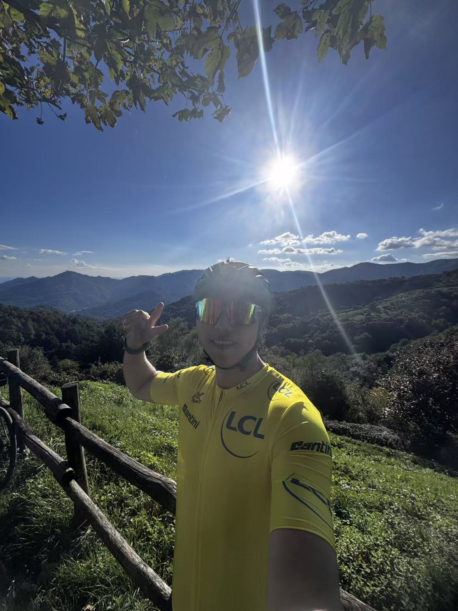

Kesen Tong
Marketing & AI · Research · Data · Startups — Milan / Shanghai / Remote
Summary
Graduate student in Marketing Management at Università Bocconi. Research and engineering experience across multimodal data, scraping pipelines (~3.5M+ listings), and marketing analytics. Built startups and led experiments in influencer marketing and e‑commerce. Interested in digital marketing, NLP, ML, and AI‑driven decision making.
Selected Research Experience
Graduate Research Assistant · Marketing Dept., Università Commerciale Luigi Bocconi
Milan, Italy · Jun 2025 – Dec 2025
Project: Exploring the impact of AI‑generated product videos. Built large‑scale data pipelines (~3.5M+ listings) across Autotrader, Cars.com, and CarGurus with Apify, Bright Data, Xbyte, ProductDataScrape; optimized proxies and data structures. Extracted multimodal video metadata (audio/visual/text) using Librosa, OpenSMILE, OpenCV, YOLOv8, PaddleOCR, FFmpeg; constructed feature datasets (tone, pitch, motion, brightness, OCR text). Labeled 1,000+ models; contributed to ML for video/voice analytics; labelled 7,000 Taobao videos; experimented with Shein scraping (Selenium, undetected‑chromedriver); gathered daily Google Trends (Zara/Shein/Temu/Vinted/H&M) with R.
Graduate Research Assistant · Management & Technology Dept., Bocconi
Milan, Italy · Jan 2025 – Mar 2025
Project: Public Pressure, Private Firms, and Directed Technical Change with Information Disclosure. Collected and analyzed structured data on 700 firms (sector, ownership, HQ, founding year, parent) to study disclosure and innovation under public pressure.
Undergraduate Research Assistant · School of Business, Shanghai University of Finance & Economics
Shanghai, China · Jun 2022 – Dec 2024
Project: The Impact of Virtual Spokesperson on Brand Attitudes of Gen Z. Designed a survey‑based experiment (n≈600) comparing 2D/3D/AIGC spokespersons vs real endorsements; preprocessing & scale validation in SPSS and Python. Ran dummy‑variable regression and moderated‑mediation (PROCESS Model 7); robustness checks show spokesperson–product fit drives brand attraction & loyalty.
Working Experience
Project Manager Intern · Qabas Consulting & Training
Milan, Italy · Jan 2025 – Jul 2025
Supported data‑driven sustainability consulting: ESG benchmarking (carbon intensity, resource efficiency, social impact), built sustainability data models and dashboards, and contributed predictive tools aligning client strategy with reporting standards (GRI, SASB).
Product Manager (Full‑time) · Zhejiang Enli Traffic Technology
Zhejiang, China · Jun 2023 – May 2024
Directed applied research for 3rd‑gen intelligent safety helmet (AI, IoT, sensors). Mixed‑method user research and data‑driven optimization; prototyped GNSS/UWB positioning; linked usability, adoption, and safety outcomes to guide design and prioritization.
Brand Operation Intern · JD.com
Beijing, China · Jul 2021 – Dec 2021
Consumer‑behavior analytics for young cohorts; A/B tests, keyword regression, and cohort segmentation to evaluate initiatives (101‑Day Return, 10‑Year Quality Guarantee, 21‑Day Habit‑Building), achieving >¥200k sales growth per brand per month.
Publications & IP
- Tong, K., Wang, K., & Wang, Z. (2023). Virtual Spokesperson Characteristics and Gen Z Brand Attitudes. China Business Review, 23(24). DOI: 10.19699/j.cnki.issn2096-0298.2023.24.098.
- Wang, Z., Tong, K., & Xu, Y. (2024). Knowledge Inertia, Relationship Quality, and Organizational Innovation. Trade Fair Economy, 24(12). DOI: 10.19995/j.cnki.CN10-1617/F7.2024.12.112.
- Software Copyright: Volunteer Assistance Filling System V1.0 Based on Big Data, No. 2023SR1162448.
- Artwork Copyright: FU & XING Logos, No. 2022‑F‑10077290 & 2022‑F‑10077291.
Education
M.Sc., Marketing Management · Università Bocconi
Milan, Italy · Sep 2024 – Present · GPA 26/30
Courses: Data Mining; ML & Causal Inference; Predictive & Generative AI; NLP & ML for Business; Understanding Consumer.
Bachelor in Management · Shanghai University of Finance & Economics (Zhejiang College)
China · Sep 2019 – Jun 2023 · GPA 88.06/100 (Rank 1/135)
Courses: Micro/Macroeconomics; Statistics B; Consumer Behavior; Marketing A. Thesis Supervisor: Meichang Li.
Major in Sci & Tech Innovation and Entrepreneurship · SUFE (Shanghai)
Jun 2022 – Jan 2023
Courses: Metaverse; Product Launch; Market Introduction; Blockchain; Venture Capital.
Startup & Leadership
Cofounder · StarPath International Ltd (HK) & StarPath Entertainment Inc (CO, USA)
Feb 2024 – Present
North‑America TikTok agency network; 232 creators & 43 brands; A/B tests, segmentation, and regression on content/cadence/spokesperson effects; built ROI/attribution/elasticity analytics for budget allocation.
Founder · Laiyi E‑commerce Company
Zhejiang, China · Jan 2022 – Jun 2023
Cross‑border operations on Alibaba International & Shopee; price elasticity modeling and forecasting; improved ROI and cut CAC >23% via funnel and ad‑attribution optimization.
Co‑Founder · KOAZY Brand
Nov 2022 – Present
100k+ subscribers across Taobao, Xiaohongshu, and JD.com; A/B tests, cohort analysis, and promotion modeling to optimize campaigns.
Regional Ambassador · CRI Study Organization
Sep 2022 – Jun 2023
Managed club activities across five universities (10,000+ students).
Chairman · Youth League Committee
Sep 2021 – Jun 2022
Managed 300+ members and reported 1,000+ activities.
Campus Ambassador · LinkedIn China
Sep 2020 – Jun 2021
Hosted multiple job‑seeking events (~400 participants each).
Team Lead · Smart Helmet Project
Mar 2021 – Dec 2022
Multimodal data collection (video, audio, physiological, location); applied CNN‑RNN & transformers for safety analytics and anomaly detection.
Founder · HQT Education Club
Jun 2019 – Jun 2021
Organized three volunteer‑teaching trips to rural primary schools.
Awards & Scholarships
- Second Prize — G60 Sci‑Tech Innovation Competition (2023)
- Second Prize — 4th Comprehensive Transportation Innovation & Entrepreneurship Competition (2023)
- Valedictorian (only 1) — SUFE Zhejiang College (2023)
- Provincial Exclusive Entrepreneurship Interview — China News Blue (2022)
- Municipal Personal Interview — Jinhua News (2022)
- Second Prize (Team Lead) — 928 Challenge (2022)
- Second Prize (Team Lead) — International Maker & Entrepreneurship Competition (2022)
- Third Prize (Team Lead) — 17th National College Students E‑commerce Competition (2022)
- Second Prize (Team Lead) — 8th China Students’ Internet+ Innovation & Entrepreneurship (2022)
- Second Prize (Team Lead) — 13th The Challenge Cup (2022)
- Second Prize (Team Lead) — 12th China National Innovation, Creativity & Entrepreneurship Challenge (2022)
- National Scholarship (No.1) — China College Student Nation (2022)
- College Student of the Year (only 1) — SUFE Zhejiang (2021)
- Research & Innovation First Class Scholarship — SUFE Zhejiang (2021)
- Outstanding Student Leader — SUFE Zhejiang (2020)
- National Encouragement Scholarship — Nation‑Level (2020)
Skills, Languages & Interests
- Programming / Tools: LaTeX, Git, Julia, PyTorch, JAGS, Qualtrics, PsychoPy (Psycharm), R, Python, Stata, SQL, SPSS, AMOS, Adobe Premiere, After Effects, Stable Diffusion.
- GRE: Verbal 164 · Quant 170.
- Languages: English (fluent), Chinese (native), Italian (intermediate).
- Interests: Sky‑diving, Scuba‑diving, Surfing, Road‑bicycle, Skiing, Basketball, Badminton, Table tennis, Workout, Guitar, Piano, Rock, Videography.